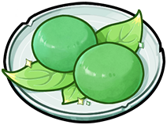
Green Riceball Common
Soft and delectable rice cakes made from washed and pounded green grains.
 Water ×2
Water ×2 Green Grains ×4
Green Grains ×4
- Makes
- 50
- How
- known from the start
- Effect
- Restores 8% + 1,000 HP
Reference
Every dish in the Alchemy Pot, by the kingdom that brings it and so by season, with its ingredients, how many it makes, how you learn it, what it does and where that applies. Names, flavour text, effects and places are the game's own text.
Recovery dishes unlock as their kingdom opens. Buff dishes are learned from a recipe scroll and work only in the modes their scope names: Arena, Terrain Quest, Fantasia Ascent, Daily Dungeon, Crucible of Hieromon, Raid: Chaos Tyrant, Split Mirage, Bond Odyssey, Story Battles, Savage Epoch, Other Battles. Sixty of them also leave a permanent stat bonus each time you eat one, which fades with the number of meals of that dish you have eaten:
| Meals of the dish | Bonus efficiency |
|---|---|
| 1–10 | 100% |
| 11–30 | 50% |
| 31–50 | 20% |
| 51+ | 5% |
cooking_prop_effect_full; the same curve for every dish that has a permanent bonus.
Soft and delectable rice cakes made from washed and pounded green grains.
Water ×2Green Grains ×4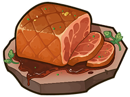
Honey-spiced meat, slow-roasted to juicy perfection. Rich yet light.
 Tender Meat ×2
Tender Meat ×2 Honey ×10
Honey ×10Fluffy sweet potato mash, baked golden. A Verdantglade children's favorite.
Water ×1 Flour ×10
Flour ×10Goddess brought this dish from another world. A divine fusion of otherworldly flavors and Verdantglade bounty.
Tender Meat ×2 Sweet Potato ×10
Sweet Potato ×10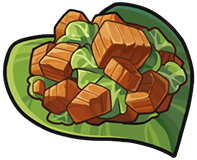
Tender stewed meat with crisp veggies. A timeless Verdantglade comfort food.
Raw Meat ×3Green Grains ×2Flour ×10Originally a welcome treat, this soft, sweet cake quickly became a menu favorite of children.
Green Grains ×2 Plump Rounberry ×3
Plump Rounberry ×3 Blue Bird Egg ×7
Blue Bird Egg ×7A golden crust adorned with colorful toppings that sparkle like jewels, stunning and appetizing.
 Exquisite Meat ×1Cobalt Bird Egg ×4
Exquisite Meat ×1Cobalt Bird Egg ×4 White Truffle ×6
White Truffle ×6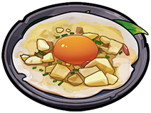
A golden, glowing honey and egg fusion that emerges from the pot accompanied by an almost audible familiar melody.
Green Grains ×2Multiflora Honey ×7Blue Bird Egg ×3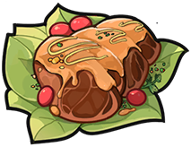
A hearty blend of juicy berries and tender meat chunks, satisfying and nutritious.
Tender Meat ×2Rounberry ×10One bite blends the finest truffles with the essence of Verdantglade, offering a flavor tour across the realm.
Exquisite Meat ×1Green Grains ×2Royal Jelly ×4White Truffle ×16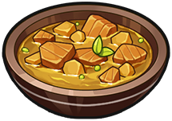
Spice-coated tender meat and potatoes that make you sweat and pant, yet irresistibly draw you back for more.
Raw Meat ×3Potato ×10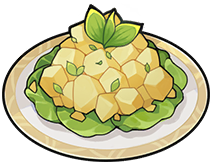
Crisp veggie salad that melts in your mouth. A crunchy, joyful experience.
Green Grains ×2Potato ×10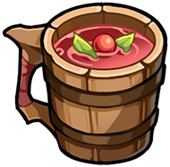
Naturally fermented fruit drink. A refreshing sweet-tart beverage for all ages.
Water ×2Rounberry ×10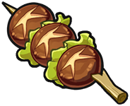
Chargrilled mushroom skewers bursting with smoky mountain flavor.
 Pepper ×2
Pepper ×2 Mushroom ×4
Mushroom ×4Bold spices reign supreme, weaving diverse ingredients into a harmonious flavor symphony.
Prime Meat ×2 Fragrant Curry ×4
Fragrant Curry ×4 Ferrous Chestnut ×3
Ferrous Chestnut ×3 Oasis Star ×3
Oasis Star ×3A rare treat in the meat-and-mushroom Cinder Ridge. It tastes so divine it makes the Ascended Ones dance.
Royal Jelly ×2Oasis Nova ×2 Camel Milk ×8
Camel Milk ×8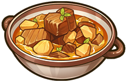
Heat-reduced fruit juice forms a glossy film, enveloping ingredients in a sweet, syrupy embrace.
Tender Meat ×2Curry ×5 Thorn Pear ×5
Thorn Pear ×5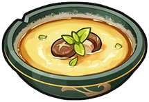
It contains silky custard so delicate a gentle breath ripples its surface, resembling the soft glow of a full moon.
Mushroom ×2Cobalt Bird Egg ×2 Skimmed Butter ×2Camel Milk ×16
Skimmed Butter ×2Camel Milk ×16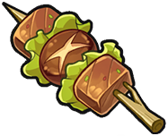
Skewered meat and mushrooms with simple spices. A campfire feast that stirs homesickness in Cinder Ridge folks.
Raw Meat ×3Mushroom ×2Potato ×10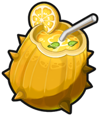
The Cinder Ridge's "water of life": an unassuming fruit that instantly quenches thirst and cools the body.
Water ×1Prickle Pear ×10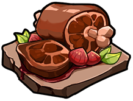
Meat and chestnuts roasted on hot stones. Chestnuts burst, spreading spices and flavor throughout the meat.
Tender Meat ×2Pepper ×2Chestnut ×10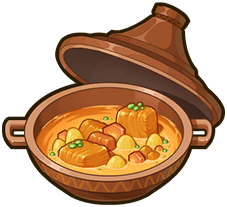
Cooked in a special pot that enhances pressure, this dish boasts incredibly tender meat and long-lasting aromas.
Tender Meat ×2Sweet Potato ×5Curry ×5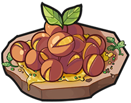
Watch as chestnuts dance and crack on sizzling stones, releasing waves of rich, nutty sweetness.
Butter ×5Chestnut ×5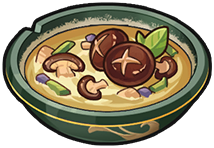
A rare, pure mushroom soup in the spice-loving Cinder Ridge, capturing the essence of the mountains.
Water ×1Mushroom ×2Prickle Pear ×10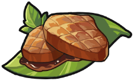
Perfectly seared thick-cut steak served on fragrant leaves. Its enticing aroma captures the essence of the forest with every bite.
Raw Meat ×3Pepper ×1Prickle Pear ×10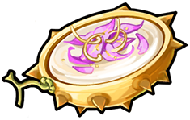
As you stir, a translucent, jelly-like cream embraces each ingredient. Petals and aroma suspend within, creating a mesmerizing play of light on its rippling surface.
Salted Butter ×4Ferrous Chestnut ×3Oasis Star ×3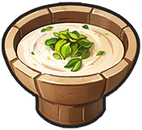
Silky rice essence drink with a hint of sweetness. Refreshingly light.
 Sugar ×2Green Grains ×4
Sugar ×2Green Grains ×4
Lobster sealed in melted butter, bursting with rich sweetness. Each bite leaves you craving more.
Sugar ×4Skimmed Butter ×2Oasis Nova ×2 Azure Lobster ×16
Azure Lobster ×16A retired samurai's recipe with perfectly chewy noodles. Only master chefs can recreate this legendary dish.
Tender Meat ×2 Miso ×5
Miso ×5 Petal Fish ×5
Petal Fish ×5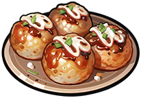
Meatballs quickly seared with expert technique. Crispy outside, tender inside. Each bite explodes with layered flavors.
Plump Rounberry ×2Spicy Miso ×3 Octopus ×5
Octopus ×5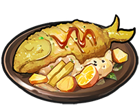
Boneless fish chunks fried until crispy. Beneath its simple appearance lies a hidden sauce. One bite, and you're hooked.
Thorn Pear ×5 Dancing Leaf ×2Petal Fish ×3
Dancing Leaf ×2Petal Fish ×3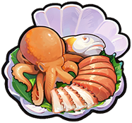
Fresh-caught seafood sliced into delicate sashimi. Each bite captures the pure taste of the ocean.
Spicy Miso ×2Fresh Petal Fish ×5Octopus ×3
Deep-sea sashimi offers rare, unforgettable flavors from the vast ocean's mysterious depths.
Water ×4Tidal Octopus ×2Azure Lobster ×8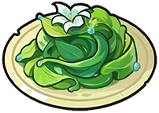
Once a famine savior, this humble seaweed dish is now a cherished symbol of the Aqualis' resilience.
Water ×1Aqua Dancer ×10Simple ingredients tell the history of Aqualis. Its subtle sweet-sour flavors carry stories of the past.
Green Grains ×2Aqua Dancer ×10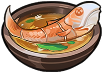
Plump petal fish embody the ocean's essence. Pure, natural flavor that needs no embellishment.
Miso ×2Dancing Leaf ×5Petal Fish ×3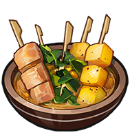
A dish born in scarcity. Ancient Aqualis residents discovered that each skewer offered unique flavors despite simple seasonings.
Raw Meat ×3Aqua Dancer ×10Even simple wild greens transformed into a hearty, flavorful feast in Loong Haven.
 Salt ×2
Salt ×2 Mustard Greens ×4
Mustard Greens ×4
Legend says first tasters felt they'd ascended to heaven at the very first bite of it. Hence its name.
Exquisite Meat ×1Mustard Greens ×2Tidal Octopus ×4 Golden Ganoderma ×16
Golden Ganoderma ×16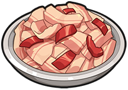
Spiciness may sting, but here it meets ingredients in a dance of pleasure for your taste buds.
Raw Meat ×3Salt ×1 Beans ×10
Beans ×10A pot of diverse ingredients, each flavor distinct yet harmonious. Perfect comfort food anywhere.
Exquisite Meat ×1 Archclaw Crab ×4Golden Ganoderma ×6
Archclaw Crab ×4Golden Ganoderma ×6One sip, and rich broth instantly warms your soul with each flavorful spoonful.
Prime Meat ×2 Devil's Chili ×5Giant Claws ×5
Devil's Chili ×5Giant Claws ×5Slowly braised to perfection, ingredients meld into a melt-in-your-mouth harmony of lingering flavors.
Raw Meat ×3Beans ×10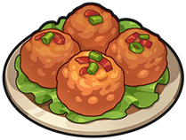
Tender meatballs soak up savory broth. Each bite delivers pure, juicy satisfaction.
Tender Meat ×2Chili Pepper ×10The aroma alone makes mouths water. What an irresistible dish, especially when hunger strikes.
Tender Meat ×2Sugar ×2Crunchy Beans ×10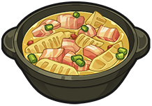
Crisp bamboo shoots paired juicy meat, capturing the wilderness in a perfect balance.
Tender Meat ×2 Bamboo Shoot ×10
Bamboo Shoot ×10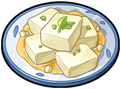
Surprisingly made from mere beans and salt, this mild dish soothes troubled minds with its simplicity.
Salt ×1Beans ×10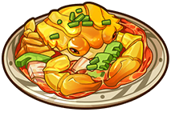
Crab shells turn golden under secret sauce, conquering taste buds like battlefield warriors.
Prime Meat ×2Prime Bamboo Shoot ×5Giant Claws ×5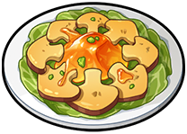
Honey-glazed baked cake. Eat quickly before others come begging for a taste!
Honey ×5Crunchy Beans ×5A humble noodle soup that melts worries away. You'll find an empty bowl before you know it.
Salt ×1Flour ×5Aqua Dancer ×5Soft, shelf-stable, and easy to digest, this military ration is the go-to choice for restoring stamina among Aethyrines.
 Woodfruit Powder ×2
Woodfruit Powder ×2 Amber Resin ×4
Amber Resin ×4Crushed fruit is mixed and sprinkled like holy light—a feast for the senses that dispels darkness!
Multiflora Honey ×1 Pure Electro Oil ×2
Pure Electro Oil ×2 Solberry ×7
Solberry ×7Meat juices capture the aroma of petals, harmonizing the natural flavors.
Tender Meat ×2Electro Oil ×5 Starlit Orchid Spore ×5
Starlit Orchid Spore ×5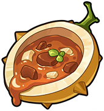
The thick fruit shell holds pulp, cooked into a rich yet refreshing soup.
Raw Meat ×3Prickle Pear ×10Roast tailored for legion soldiers, with a balanced mix of meat and vegetables.
Tender Meat ×2Bamboo Shoot ×2 Cloud Conch Fillets ×8
Cloud Conch Fillets ×8A legendary dessert so irresistible that even the goddess craves more.
Camel Milk ×1Golden Solberry ×3 Auroral Tear ×6
Auroral Tear ×6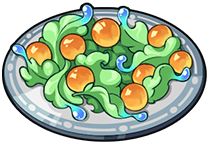
Easy to make and delightfully crisp, but so appetizing that it leaves you wanting more.
Amber Resin ×2Aqua Dancer ×3Orchid Spore ×7Stir-fried petals with flour, durable and ideal for adventuring.
Mustard Greens ×2Flour ×2Orchid Spore ×8The crispy crust melts in your mouth, releasing rich juices. Chewing it feels like drifting on clouds.
Rounberry ×1Butter ×2Starlit Orchid Spore ×7A dish packed with all its essence. Smell it, taste it—soft and rich, gone before you realize.
Flour ×4Cobalt Bird Egg ×4Golden Solberry ×4Auroral Tear ×12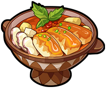
The moment the lid opens, lightning and sunlight burst forth. The feast delights the eyes even before the first bite.
Pure Electro Oil ×2Anemo Conch Fillets ×6Solberry ×2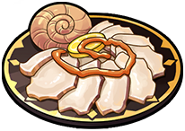
With a flash of magic fire, the meat cooks through while keeping all its freshest taste.
Chili Pepper ×2Electro Oil ×4Cloud Conch Fillets ×4Easy to prepare yet rich in flavor. Each chew brings subtle new notes from the mingling ingredients.
Raw Meat ×3Beans ×3Orchid Spore ×7Buttery, milky popcorn that people and toys alike can't resist.
 Paradise Milk ×2
Paradise Milk ×2 Corn ×4
Corn ×4Made with premium pumpkin, with a crisp crust and a bubbling sweet pumpkin filling inside.
Paradise Milk ×2 Pumpkin ×10
Pumpkin ×10Take a bite and savor the silky blend of sweetness and bittersweet depth.
Starlit Orchid Spore ×2 Rich Cocoa Butter ×8
Rich Cocoa Butter ×8Sweet and springy, with a light hint of the ocean in every bite.
Sugar ×2Aqua Dancer ×4Orchid Spore ×6Pour it out and hear it fizz. The bubbles dance across your tongue like tiny glass marbles. Perfect for quenching your thirst mid-game.
Water ×2Sugar ×2 Bounceberry ×10
Bounceberry ×10A hot dog made with Crystal Pineapple, packed with layers of flavor and a fresh surprise in every bite.
Prime Meat ×2Anemo Conch Fillets ×2Bounceberry ×4 Crystal Pineapple ×4
Crystal Pineapple ×4Rumor says a mischievous god created this treat by sneaking their favorite ingredient into a chef's dessert, and somehow made it unforgettable.
Paradise Milk ×4White Truffle ×4Sunlit Crystal Pineapple ×4 Starstream Fruit ×12
Starstream Fruit ×12Sweet, fluffy, and charmingly shaped. Perfect with a light drink for a lovely teatime break.
Beans ×2Pumpkin ×8A cloud-soft cream topping drizzled with cool cocoa sauce. Treat your tongue to a frosty little feast!
Butter ×2Rich Cocoa Butter ×2Bounceberry ×6Tired? Thirsty? Cool off with a sweet and tangy Crystal Milkshake!
Salted Butter ×2Fragrant Cocoa Butter ×4Crystal Pineapple ×4Hey, friend. How about a special? A drink that catches the glow of meteors, perfect for watching an absurd little spectacle.
Golden Solberry ×2Sunlit Crystal Pineapple ×4Starstream Fruit ×4A bouncy pudding stamped with plush paw prints. One tiny tap and it jiggles adorably.
Sugar ×2Amber Resin ×2Prickle Pear ×10Clear as a gem, with pumpkin sweetness perfectly suspended inside. One look and you'll want a bite.
Amber Resin ×2Honey ×2Giant Pumpkin ×8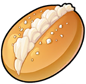
Soft, sweet, and lightly scented with vanilla. One bite is all it takes to soothe the soul.
 Cream ×2
Cream ×2 Shimmering Vanilla ×4
Shimmering Vanilla ×4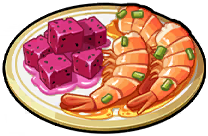
Slow-roasted in a secret dragon fruit glaze. The smoky char perfectly balances the sweet and spicy tang.
 Succulent Dragon Fruit ×7
Succulent Dragon Fruit ×7 Frozen Shrimp ×3
Frozen Shrimp ×3A warm, tart puree with a hint of spice. It sends a comforting heat straight to the heart.
Cream ×2Potato ×4Dragon Fruit ×6A gem-like cake rolled with crystal-clear fruit. Perfectly balances sweetness and freshness.
Cream ×2Flour ×2 Cryo Berry ×10
Cryo Berry ×10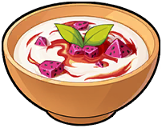
A velvety, rosy bisque where rich cream meets sweet fruit. Every spoonful is pure comfort.
Cream ×2Shimmering Vanilla ×4Dragon Fruit ×10Extreme frost and blistering heat waltz on your palate. A spectacular sensory experience.
Camel Milk ×2Azure Cryo Berry ×4 Frostflame Berry ×4
Frostflame Berry ×4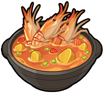
Plump shrimp drenched in chili oil. An explosively spicy, utterly addictive bite.
 Fiery Fruit Jam ×2Frozen Shrimp ×8
Fiery Fruit Jam ×2Frozen Shrimp ×8Melts in your mouth, instantly awakening sweet memories of summer days.
Cream ×2Shimmering Vanilla ×4Orchid Spore ×10Deep-sea shrimp meets blazing fruit jam. A thrilling collision of frost and fire on the palate.
Corn ×4Inferno Fruit Jam ×5Deep-Frozen Shrimp ×5A bubbling, crimson broth that instantly ignites your taste buds. A true test of endurance.
Tender Meat ×2Chili Pepper ×5Fiery Fruit Jam ×5Sweet fruit and rich cream blend into a refreshing treat that dances on the palate.
Cream ×2Prickle Pear ×4Dragon Fruit ×6Icy smoothness meets a fiery kick. A delicacy found only in a land forged by colliding elements.
Oasis Nova ×2Auroral Tear ×2Azure Cryo Berry ×6Frostflame Berry ×10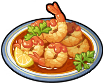
Sweet, tender shrimp encased in a golden crunch. Impossible to eat just one.
Butter ×3Frozen Shrimp ×7A hearty platter for adventurers, featuring grilled meat, bread, and a drink. It might not be fancy, but it's filling and perfect for recharging your stamina.
A surprisingly delicious stir-fry whipped up from monster cabbage!
Soft and bouncy jelly that melts your worries away with every bite.
Rounberry ×10 Slime Gel ×2
Slime Gel ×2Toss a mix of ingredients into the rich, savory hotpot—after a brief simmer, a feast of endless flavors unfolds.
Prime Meat ×2 Marvel Broth Base ×10Water ×3
Marvel Broth Base ×10Water ×3Skewers tumbling in the hotpot, fully infused with savory broth. A winter bite that warms you from the inside out.
Tender Meat ×2Wonder Broth Base ×10Water ×2Green Grains ×2What each ingredient goes into, most-used first.